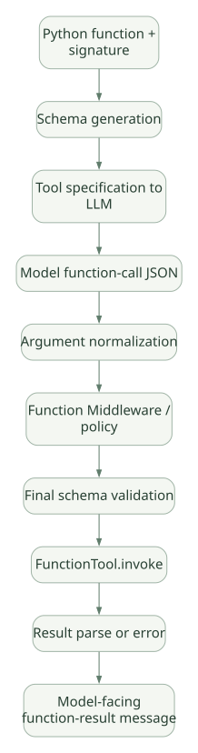

SECOND STUDY / Tool·정책·승인
Tool·정책·승인
이번 단원의 읽는 관점
스키마·최종 인자·실행·결과와 Middleware 적용·실패·승인 상태를 연결합니다.
살펴볼 경계정책 뒤 인자 변경, MiddlewareFailure·Termination, 특정 Session 요청에 바인딩된 승인을 보세요.
이 페이지의 세부 목차
8. Tool Schema, Validation, Execution, Result Conversion#
8.1 FunctionTool의 책임#
고정 소스 _tools.py의 FunctionTool은 Python 함수를 LLM이 호출 가능한 도구로 바꾸는 래퍼다. 타입 애너테이션과 Pydantic 모델을 활용해 입력 스키마를 생성하고, 호출 시 변환·검증한다. 결과 파싱 정책에 따라 일반 값이 Content 목록으로 바뀌거나 원시 값이 전달될 수 있다. [S03]
가로로 이동해서 읽을 수 있습니다. 도식 크게 보기 ↗

원문의 학습용 도식입니다. 연결 방향·분기 조건·점선·쌍방향 연결을 보존해 세로로 배치했습니다. 실제 구현·의사코드·해석의 구분은 본문을 함께 읽으세요.
도식 원문 보기 (Mermaid)
flowchart TD
P[Python function + signature] --> SC[Schema generation]
SC --> API[Tool specification to LLM]
API --> CALL[Model function-call JSON]
CALL --> N[Argument normalization]
N --> PM[Function Middleware / policy]
PM --> V[Final schema validation]
V --> EX[FunctionTool.invoke]
EX --> RES[Result parse or error]
RES --> MSG[Model-facing function-result message]8.2 타입 검증과 보안 검증은 다르다#
query: str가 유효하더라도 'DELETE FROM manufacturing_table'처럼 위험한 SQL일 수 있다. 반대로 사용자 권한이 없다면, 완벽하게 정형화된 lot_id: str도 허가할 수 없다. 함수 파라미터가 JSON Schema를 만족한다는 사실은 인가·민감 정보·명령 허용 범위를 보장하지 않는다.
| 검증 계층 | 검사 대상 | 주된 책임자 |
|---|---|---|
| JSON/Pydantic | 값의 타입, 필수 필드, 길이/범위 | Tool/스키마 |
| Function Middleware | 실행 정책·예외·사전 승인 | Framework 구성 |
| Tool 내부 | 사용자/조직 권한·파라미터 의미·부작용 | 서비스 도메인 코드 |
| 인프라 | DB 계정, 네트워크, 컨테이너 격리 | 운영 환경 |
이 분리가 [D06]의 권고와도 일치한다. 모델에게 “읽기 전용”이라고 명령하는 것만으로 읽기 전용이 구현되지 않는다.
8.3 Middleware가 Arguments를 수정할 수 있다는 점#
고정 버전의 FunctionInvocationContext 문서는 Middleware가 context.arguments를 읽거나 고칠 수 있고, 최종 Handler는 변경된 인자를 실행 직전에 다시 검증한다고 설명한다. 정책 검사 이후에 인자가 다시 바뀌면, 승인된 호출과 실제 실행된 호출이 달라지는 TOCTOU 문제가 생긴다. 이를 막기 위해 보안 검증 이후의 인자 변경은 MiddlewareFailure를 발생시키는 경로가 있다. [S04][S03]
왜 중요한가? 외부 모델이 file_path=/safe/a.csv를 요청해 정책을 통과했더라도, 하위 Middleware가 이를 /secret/key로 바꾸면 정책 검사는 무의미해진다. 따라서 실행 직전 최종 인자에 대한 정책 검증이 강제돼야 한다.
8.4 반환값의 정규화#
Function Middleware는 context.result를 가로채 치환할 수 있다. 하지만 값의 형태에 따라 list[Content], 문자열, 기타 객체가 서로 다른 형태로 정규화될 수 있다. 특히 승인 요청을 나타내는 특별한 Content는 일반 문자열과 다른 제어 신호다. [S04]
설계상 교훈 [INF]: Tool 실행 결과와 제어 신호를 모두 임의의 문자열로 변환하면 승인·재개 로직이 망가질 수 있다. 자체 Framework라면 ToolSuccess, ToolError, ApprovalRequired 같은 타입을 구분하고 직렬화 규약을 명시하는 편이 좋다.
9. Tool 병렬 처리: ‘여러 호출’과 ‘동시 실행’은 다르다#
9.1 동시성의 네 층#
| 상황 | 의미 | 실행 주체 |
|---|---|---|
| 모델 응답의 복수 Tool Call | 한 번의 모델 출력에 여러 호출 요청 | 모델/Provider |
| 병렬 Tool Execution | 요청된 여러 Tool을 동시 I/O로 실행 | Function Invocation 실행기 |
| 병렬 Agent Delegation | 서로 다른 Agent가 각각 모델/도구를 호출 | 위임자·오케스트레이터 |
| Workflow Fan-out | Graph의 여러 Executor를 같은 Superstep에 스케줄 | Workflow Runner |
Tool 호출이 복수라고 해서 항상 asyncio.gather로 동시 실행된다고 주장해서는 안 된다. 공급자 옵션·Tool 실행 정책·구현 방식·병렬 호출 허용 여부에 따라 달라질 수 있다. 구체적인 동시성 Primitive와 예외 전파는 [S03]의 Function Invocation 관련 구현과 해당 테스트를 읽어 확인해야 한다. [UNV] 이 문서는 Tool 간 동시 실행을 실제 계측하지 않았다.
9.2 병렬 처리에서 필요한 계약#
- 입력 격리: Tool A와 B가 Session·메시지·전역 상태를 공유하는가?
- 결과 정렬: Tool 결과를 완료순으로 모델에 주는가, 원래 호출순으로 주는가?
- 취소: A가 실패하면 B를 취소하는가? 이미 실행된 외부 HTTP 요청은 취소되는가?
- 동시 쓰기: A/B가 같은 파일·테이블을 수정하면 누가 잠금을 소유하는가?
- 부분 성공: 결과 하나만 성공해도 다음 모델 호출을 진행하는가?
- 반복 예산: 모델 호출 수뿐 아니라 Tool 호출 수·Tool 비용도 제한하는가?
[PSEUDO] 경쟁 조건 사례:
# 같은 세션의 counter가 0일 때 아래 두 작업을 동시 실행했다고 가정
async def increment_A(state):
current = state['counter'] # 0
await asyncio.sleep(0)
state['counter'] = current + 1
async def increment_B(state):
current = state['counter'] # 0
await asyncio.sleep(0)
state['counter'] = current + 1
# 최종값이 2가 아니라 1이 될 수 있다.
# MAF의 실제 구현 코드를 발췌한 것이 아닌 동시성 교육용 사례다.9.3 리소스 소유권 원칙#
Tool을 병렬로 실행할 때 가장 취약한 지점은 모델의 ‘판단’이 아니라 도구의 외부 부작용이다. DB 트랜잭션, 파일 덮어쓰기, 웹훅 알림 등은 Function Invocation 계층이 원자성·멱등성을 모두 책임져 주지 않는다. 키 기반 락·DB 트랜잭션·읽기 전용 역할과 같은 외부 정책이 필요하다. [INF]
10. Middleware: Agent / Chat / Function이 실제로 언제 도나?#
MAF의 Middleware는 3가지 별도 인터셉션 지점을 제공한다. [D01][S04]
| 종류 | 호출 시점 | 변경 가능 대상 | 대표 목적 | 주의 |
|---|---|---|---|---|
AgentMiddleware |
Agent run() 전후 |
Agent 입력, 컨텍스트, 결과 | 정책, 상위 반복, 감시 | Tool마다 실행되는 것은 아님 |
ChatMiddleware |
ChatClient의 모델 호출 전후 | 메시지, 모델 옵션, 응답 | 프롬프트 수정, 비용 관리 | 여러 Tool Loop 동안 매번 실행될 수 있음 |
FunctionMiddleware |
개별 Function Tool 호출 전후 | 인자, 실행 여부, 결과 | Tool 승인, 인가, 로깅 | 일반 예외가 Tool 오류로 변환될 수 있음 |
10.1 call_next()의 의미#
[PSEUDO] Middleware 체인:
async def middleware_A(ctx, next_call):
assert_policy(ctx) # 이전
await next_call() # 다음 Middleware 혹은 실제 Handler
audit(ctx.result) # 이후
async def middleware_B(ctx, next_call):
ctx.metadata['trace'] = True
await next_call()실행 구조를 ‘양파 구조’라고 부를 수 있다. A가 B를 감싸고 B가 실제 Tool을 감싸면 A.pre → B.pre → Tool → B.post → A.post가 된다. 다만 예외·취소·스트리밍 미소비에서는 post 부분이 기대대로 실행되지 않을 수 있으므로 try/finally 또는 제공되는 Cleanup Hook이 필요하다.
10.2 정책을 어디에 놓아야 하는가?#
- Agent Middleware: 사용자 요청 자체의 허용 여부, 전체 요청 상한.
- Chat Middleware: 프롬프트·컨텍스트 검증, 모델 옵션 제한.
- Function Middleware: 실제 실행될 특정 Tool 이름·인자 검사.
- Tool 서버/DB: 최종 인가, 네트워크·파일 접근 통제.
중요: 외부 MCP Tool이나 원격 Hosted Tool에 대해 Framework의 Function Middleware가 항상 해당 원격 실행 안쪽까지 적용된다고 가정하면 안 된다. 실제 Tool이 어디에서 실행되는지가 보안 강제 경계를 결정한다.